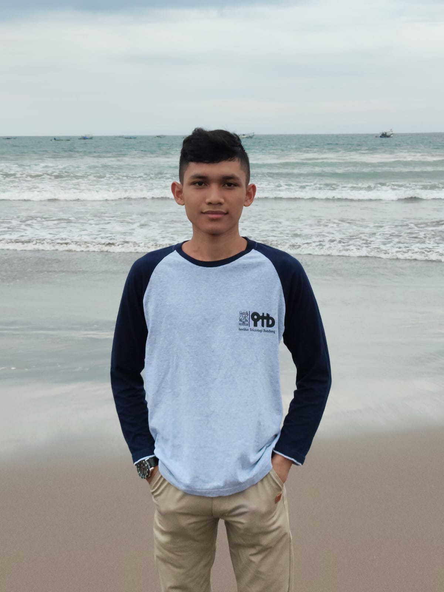

Teknik Mekatronika | Otomasi Industri | Desain CAD 2D & 3D
Menggabungkan keterampilan teknik, kreativitas desain, dan semangat untuk terus berkembang di dunia industri.
Saya merupakan lulusan Teknik Mekatronika dengan pengalaman di bidang perawatan mesin industri, sistem kontrol PLC, kelistrikan, dan robitika. Saya juga memiliki kemampuan menggunakan AutoCad untuk membuat gambar teknik 2D serta model objek dan komponen 3D. Saya senang mempelajari teknologi baru, menyelesaikan permasalahan teknis, dan mengembangkan kemampuan untuk mendukung kebutuhan industri.
Keahlian yang Saya Kuasai
Menggabungkan keterampilan teknik, kreativitas desain, dan semangat untuk terus berkembang di dunia industri.
Saya memiliki dasar pengetahuan dan pengalaman praktik di bidang mekatronika, pemeliharaan mesin, sistem kontrol, serta desain teknik. Saya terus berupaya meningkatkan keterampilan agar dapat memberikan kontribusi yang baik dalam lingkungan kerja profesional.
Memiliki pengalaman dalam pemeriksaan dan perawatan mesin tekstil industri, termasuk mesin Toyota seri JAT 610, JAT 710, JAT 810, dan JAT 910. Memahami pentingnya pemeliharaan mesin untuk mendukung kelancaran operasional dan kualitas produksi.
Memahami sistem kontrol PLC dan konsep otomasi mesin. Memiliki pengalaman dalam pengembangan alat praktik kendali mesin serta ketertarikan untuk memperdalam penerapan teknologi otomasi industri.
Memiliki pengalaman praktik dalam perancangan panel listrik, pengujian komponen, dan pemasangan kabel sistem kontrol untuk mendukung kebutuhan instalasi dan pengendalian peralatan.
Mampu menggunakan AutoCAD untuk membuat dan mengedit gambar teknik dua dimensi. Dalam proses desain, saya memperhatikan bentuk, ukuran, dimensi, dan kerapian gambar agar informasi teknis dapat disampaikan dengan jelas.
Mampu menggunakan AutoCAD untuk membuat model tiga dimensi dari objek dan komponen teknik. Berfokus pada bentuk geometris, proporsi, ukuran, dan visualisasi model untuk mendukung pengembangan konsep desain.
Memiliki pengalaman dalam pembuatan prototipe robot digital dan analog, perakitan serta kalibrasi printer 3D, dan pemeliharaan perangkat untuk mendukung kegiatan praktik teknik.
Operator Maintenance Mesin Textile
Mendukung pemeriksaan, perawatan, dan pemeliharaan mesin tekstil industri, termasuk mesin Toyota seri JAT 610, JAT 710, JAT 810, dan JAT 910. Pengalaman ini membantu saya memahami pentingnya ketelitian, keselamatan kerja, dan keandalan mesin dalam proses produksi.
Peserta Pelatihan Mekanik Alat Berat
Mengikuti program pelatihan teknis BUMA SCHOOL yang memberikan pembelajaran terkait mekanik alat berat, prosedur perawatan, dan penerapan keselamatan kerja.
Praktik Kerja Lapangan (PKL)
Mendapatkan pengalaman praktik dalam perancangan panel listrik, pengujian komponen, dan pemasangan kabel sistem kontrol untuk mendukung penerapan ilmu kelistrikan dan mekatronika.
Tim Riset dan Pengembangan Robotika
Terlibat dalam perancangan prototipe robot digital dan analog, pembuatan alat praktik kendali mesin berbasis PLC, serta perakitan, kalibrasi, dan pemeliharaan printer 3D.
Delegasi Pramuka - Peran Saka 2023
Mewakili sekolah dalam kegiatan Peran Saka Jawa Barat 2023 yang diselenggarakan oleh Saka Bahari. Kegiatan ini menjadi pengalaman dalam membangun kedisiplinan, kerja sama, dan kemampuan berorganisasi.
Juara 2 Kompetisi 3D Printer Tingkat Profinsi
Pencapaian dalam bidang pencetakan 3D yang mencerminkan minat terhadap teknologi manufaktur, kreativitas, dan pengembangan keterampilan teknis.
Sertifikat Kompetensi
Sertifikat Kompetensi pada bidang Teknik Mekatronika(Mechatronics Engineering). Dalam Skema Sertifikasi Okupasi Pelaksanaan Pemeliharaan Sistem Kontrol dan Instrumentasi
Mari Bekerja Sama
Saya terbuka terhadap kesempatan kerja dan kolaborasi di bidang mekatronika, perawatan mesin industri, otomasi, kelistrikan, robotika, serta desain teknik menggunakan AutoCAD 2D dan 3D.
Dengan pengalaman praktik dan semangat untuk terus belajar, saya ingin mengembangkan kemampuan serta memberikan kontribusi positif bagi perusahaan dan tim. Saya siap menghadapi tantangan baru dan memperluas pengalaman di dunia profesional.
Silakan hubungi saya untuk berdiskusi mengenai peluang kerja, proyek teknik, atau kesempatan kolaborasi.
Jika Anda ingin menghubungi saya, silakan kirim Email ke
ahmaddaniyalbukhori@gmail.com
No Telepon: 082218973436
@2026 Ahmad Daniyal Bukhori